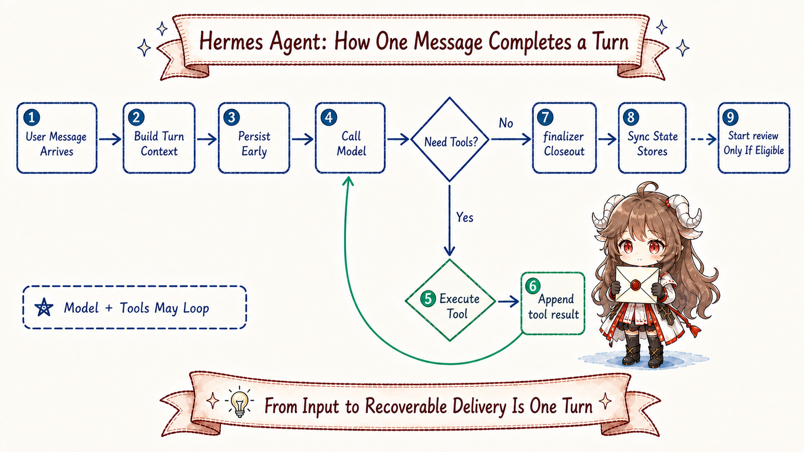
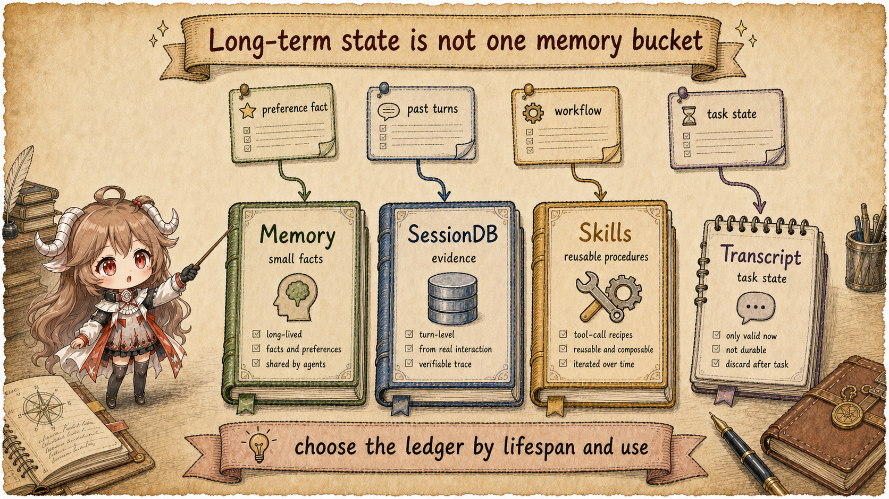
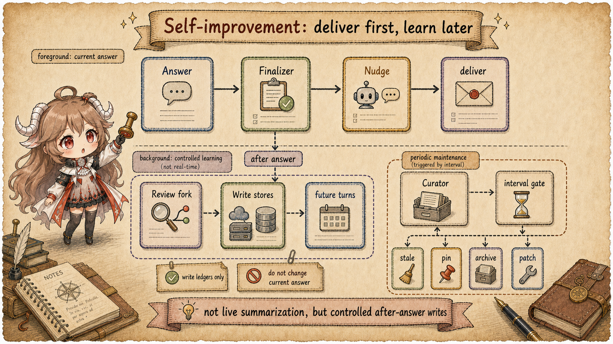
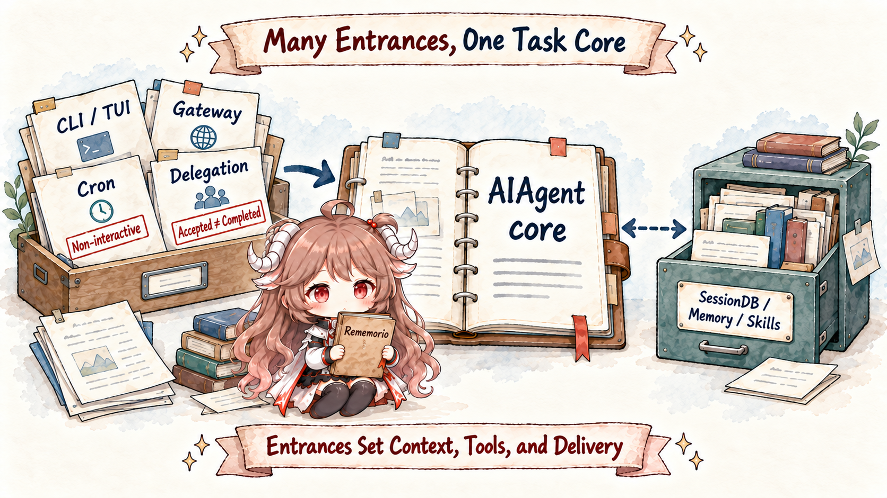
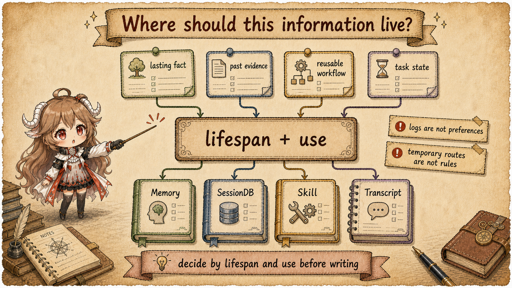

Start with an ordinary coding session. You ask an agent to change a repository. It reads the README and project rules, searches the code, edits files, and runs tests. A test fails, so it inspects the log, adds an edge case, and runs again. In the middle you say, "For this project, do not edit generated files directly." Later you ask it to find the failed command from earlier.
For a short chat, the easy answer is to append every message to history and send the whole history back to the model. A long-running agent runs into pressure quickly: history expands, tool output overwhelms the task, user preferences get mixed with one-off failures, and different entry surfaces begin to disagree. The CLI remembers one thing, the gateway remembers another, and a cron job cannot ask the user a follow-up.
Hermes Agent describes itself in the README feature map as a self-improving agent with a terminal UI, gateway, closed-loop learning, cron, delegation, and trajectory tooling. Those names look broad, but they orbit one simpler question: how should an agent keep the current task, durable history, long-term knowledge, and background learning in their proper places?
Evidence boundary.
This article uses the public README, configuration, and visible source snapshot only. Direct claims come
from fixed source links. Design intent is inferred only where call chains, data shapes, or source
comments support it. README is the map; source is the mechanism. For example, the visible
session_search tool uses SQLite/FTS5 and returns real message windows. It does not call an
LLM inside that tool path.
Read the article with five questions in mind:
- When a user message enters the system, what must Hermes preserve first?
- Why is the model-visible view not the same thing as raw transcript history?
- Why are memory, session search, and skills three ledgers instead of one memory bucket?
- Why must background self-evolution happen after delivery, with a narrow tool surface?
- How can CLI, gateway, cron, and delegation share one agent core while narrowing their own risks?
Once those questions connect, "self-evolving" stops sounding like a vague slogan. It becomes a state discipline: deliver the current task first, write reusable material into the right ledger afterward, and let future turns retrieve it according to source, lifetime, and risk.
1. Separate the surfaces first: an agent is not just chat history
The easiest mistake is to treat conversation history as the only source of truth. In Hermes, the UI view, the durable transcript, the request payload sent to the model, and the background review's candidate write-set are different surfaces.
A practical way to read the system is to split it into four lines: entry surfaces receive tasks, foreground
turns organize models and tools, durable storage preserves evidence, and long-term ledgers hold stable
preferences or reusable procedures. AIAgent sits in the middle because every entry surface
eventually has to return to the same turn lifecycle.
| Surface | Reader view | Typical failure |
|---|---|---|
| Entry surface | CLI, TUI, gateway, cron, or a subagent starts a task. | Each entry builds context differently and behavior diverges. |
| Model view | The actual messages, system prompt, tool schemas, and temporary context sent this turn. | Transient recall leaks into stable prompt and breaks cache discipline. |
| Real transcript | Durable user messages, assistant messages, tool calls, and tool results. | Summaries replace raw evidence, making later recovery brittle. |
| Long-term ledgers | Memory, SessionDB, and Skills hold different kinds of future-use state. | Preferences, evidence, and procedures collapse into one vague memory. |
2. A turn has to survive before it can be clever
The foreground turn is the unit that keeps work recoverable. Hermes builds a clean user message, tracks
counters, prepares context, runs model/tool iterations, persists messages, finalizes the result, and only
then schedules background review. The entry point is visible in
run_conversation,
with per-turn state shaped by
TurnContext.

2.1 The model view is not the raw transcript
The request the model sees is a projection. Hermes can prepend a system prompt, load project context, attach memory snapshots, restore summaries, add tool schemas, and include current-turn recall. The raw transcript remains the durable evidence, but the model view is assembled for the current decision.
This distinction matters because lossy transformations are useful only when they have an owner. A summary can help fit the prompt, but it cannot replace the transcript for audit. A memory snapshot can guide the model, but it should not become an unbounded log. A retrieved tool result can help one turn, but it should not silently become a stable rule.
2.2 The end of a turn is a distribution point
Turn finalization is where Hermes decides what to return, what to persist, what to sync, and whether a background review may run. The relevant hook lives in the finalizer review trigger. That placement explains a lot of the design: current task delivery is foreground work; learning from the turn is a post-delivery side effect.
3. The system prompt is not a junk drawer
If every useful fact gets pushed into the system prompt, the prompt becomes noisy and unstable. Hermes builds the prompt in layers. Stable identity and tool guidance come first; project context and skill indexes follow; volatile memory snapshots, user profile, provider blocks, dates, and session identifiers come later. The visible source spans the high-level structure, identity and tool guidance, and context and volatile assembly.
| Layer | What belongs there | Invariant |
|---|---|---|
| stable | Identity, tool instructions, skills index, platform notes, environment guidance. | Keep the leading rules steady so repeated turns can reuse a stable prefix. |
| context | Caller system messages and project context files. | Project facts have a source and do not merge with long-term memory. |
| volatile | Memory snapshot, user profile, provider block, date, session id. | Dynamic state is visible, but not randomly rebuilt into the stable layer. |
| turn-only | External memory prefetch and plugin pre-LLM context. | Current recall helps current reasoning without polluting transcript or stable prompt. |
The takeaway is simple: important information does not automatically belong in the system prompt. Stable rules can sit near the front; current-turn recall needs a current-turn lifetime.
4. Long-term state needs more than one ledger
Return to the opening scenario. "Do not edit generated files" is a preference. A failed test log is past evidence. A repeatable release process is procedural knowledge. All three are things an agent may need later, but they should not live in the same place.
Hermes splits durable state into Memory, SessionDB, and Skills. The split is not cosmetic. It prevents a test log from becoming a user preference, a preference from being buried in transcript, and a one-off task state from becoming a reusable procedure.

4.1 Memory holds small stable facts
Memory is for small facts that are likely to remain true: user preferences, environmental facts, and stable
constraints. The
memory_tool.py module note
says the built-in memory uses MEMORY.md and USER.md, loaded as a frozen snapshot
at session start. Writes land on disk, but they do not immediately rewrite the current system prompt.
Writes are guarded. MemoryStore.add checks empty content, scans for leakage patterns, uses file
locks, reloads from disk, deduplicates, and enforces a character budget; replace rejects
ambiguous multi-match edits. The source paths are
add
and
replace.
4.2 SessionDB preserves real history
If you need the original failed command, that is not a long-term preference. It is evidence. Hermes'
session_search tool searches SQLite session history with FTS5 and returns real message windows;
the tool boundary is described in
session_search_tool.py.
Discovery calls db.search_messages, deduplicates by session lineage, and returns anchored
windows near each hit. The code is in
_discover.
The lower-level SessionDB schema creates FTS5 and trigram tables so message content, tool names,
and tool calls can be indexed; see
hermes_state.py.
4.3 Skills turn repeatable workflows into procedural memory
A skill is not just a note that says "remember this." It is a reusable procedure with a name, description,
file body, optional references, and lifecycle metadata. The prompt builder assembles the skills prompt from
available skill metadata in
prompt_builder.py.
Creating or patching a skill goes through
skill_manage.
This is the right home for class-level process. A command sequence that works for one release should not become a memory sentence. It needs procedure text, support files when useful, and patch semantics when the workflow improves later.
5. Tool calls are not the model's private business
Tool calling can look like "the model asks for a tool and the tool runs." Hermes puts more runtime around
that moment. The executor separates concurrent and sequential paths; the concurrent path preserves original
tool-call order while appending results, and the sequential path handles stricter interaction cases. The
relevant code starts around
execute_tool_calls_concurrent
and
the sequential path.
The more important boundary is runtime-owned dispatch. session_search needs SessionDB,
memory needs the built-in memory store and external-provider sync, and
delegate_task needs the agent's delegation dispatcher. That dispatch is visible in
tool_executor.py.
The model may request a tool, but the state boundary, audit trail, permission shape, and recovery semantics belong to the runtime. Without that split, a temporary observation could become long-term memory, a search could guess at past history instead of reading evidence, and delegated work could contaminate the parent context.
6. Runtime self-evolution must happen after delivery
After turns, ledgers, and tool ownership are clear, "self-evolving" becomes concrete. It should not mean that the model reflects while answering, or that every turn is summarized into long-term knowledge. Both designs are risky: the foreground task is delayed, and temporary trial paths can harden into future rules.

Use the coding-session example again. The agent finds a fixed project command, learns your commit preference, and also tries several paths that turn out to be wrong. The test log belongs in SessionDB. A repeatable project command may become a skill. A stable preference may become memory. The failed detours should usually remain transcript only.
Hermes implements self-evolution as a controlled write after delivery. The foreground turn produces the final answer. The finalizer checks whether review is allowed. A background review fork may look at the completed turn snapshot. That fork can only call memory and skill-management tools. Successful writes land in their stores, and later turns use them through the normal Memory and Skills paths. The already-delivered answer is not rewritten.
| Step | What happens | Why this shape matters |
|---|---|---|
| 1. Deliver first | The foreground turn finishes tool calls and returns a final answer. | The user is waiting for the task result, not for self-summary. |
| 2. Check after | The finalizer checks final response, interrupt status, and memory/skill nudge gates. | Failed or interrupted turns do not become long-term lessons by accident. |
| 3. Fork review | Background review receives the completed messages snapshot and forks a configured AIAgent. |
It can inspect user messages, assistant output, tool calls, and tool results without taking over the foreground turn. |
| 4. Narrow writes | The review fork can only use memory and skill tools; external memory providers are skipped. | Self-evolution can write ledgers, but it cannot become another environment-acting agent. |
| 5. Affect future turns | Successful writes are read later through normal Memory or Skills paths. | Learning changes future work, not the answer already delivered. |
6.1 Finalizer schedules review only after the answer
The trigger point is explicit. The finalizer assembles the result, runs post hooks, syncs external memory, and only then checks whether memory or skill review should run. The code shows that review is spawned only when there is a final response, the turn was not interrupted, and a memory or skill nudge gate fired; see the review trigger.
The nudge is not the model deciding to learn. It is a runtime throttle. Memory nudge is counted by user
turns, visible in
turn_context.py.
Skill nudge is counted by tool-call iterations, visible in
conversation_loop.py.
If the foreground agent already uses memory or skill_manage, the corresponding
counter resets in
tool execution bookkeeping.
6.2 Review fork reuses runtime, but narrows tools
background_review.py
describes the job: replay a conversation snapshot in a forked agent and ask whether any memory or skill
should be saved or updated. Writes go straight to the memory and skill stores; the main conversation and
prompt cache are not touched.
The fork inherits the parent's provider, model, credentials, toolset configuration, and cached system
prompt, so it judges the turn under the same runtime conditions. But it runs with skip_memory=True
so external memory providers do not ingest the review harness as if it were user conversation. It also sets
a runtime whitelist to memory and skill tools; non-whitelisted tools are denied. The construction and
whitelist live in
_run_review_in_thread
and
the whitelisted run call.
After review finishes, Hermes scans the fork's tool results. Only successful memory or skill actions are surfaced as a compact self-improvement summary; see the action summary code.
6.3 Curator is long-term maintenance, not per-turn reflection
Background review answers "did this turn reveal something worth saving?" Curator answers a different question: "is the skill library still healthy after many turns?" Some skills are active, some are stale, some overlap, and some need patching or archiving.
The curator module says it periodically reviews agent-created skills, applies lifecycle transitions, and
may fork an AIAgent to pin, archive, consolidate, or patch skills. Its invariants are listed in
curator.py.
It is not a per-turn cleanup pass. should_run_now checks enabled, paused, and interval gates;
first observation seeds last_run_at rather than mutating immediately. See
should_run_now
and
apply_automatic_transitions.
The foreground turn, background review, and curator all improve the agent, but they run on different clocks. The foreground solves the current task. Review extracts a preference or procedure after one turn. Curator maintains the skill library after many turns. Their context and write permissions are deliberately different.
This closes runtime learning, not offline optimization. Background review asks what this turn is worth preserving, and the curator asks how to maintain the skill library. Neither proves that a particular rewrite performs better on an independent set of tasks. That requires another clock: freeze a baseline, prepare train and holdout examples, generate candidates, compare scores, and pass constraints. Article two begins at that missing evidence chain.
7. Multiple entry surfaces share the core, but not every permission
Hermes is not only a CLI. The source also includes gateway, cron, and delegation paths. If each entry surface owned its own agent loop, state discipline would fragment. Hermes instead routes them toward the same core while narrowing each surface's permissions.

7.1 Gateway turns platform context into prompt boundaries
Gateway has to carry platform details such as channel, user, thread, attachments, and response routing.
SessionContext stores per-session state for that surface; see
gateway/session.py.
Gateway should not become a separate agent. It should translate platform context into the boundaries the
core runtime already understands.
7.2 Cron narrows tools because no one is there to answer
Cron is non-interactive. It cannot rely on clarification, chat repair, or a human watching every tool
prompt. The scheduler defines a narrower default toolset in
cron/scheduler.py,
excluding interaction-heavy tools such as clarify and send_message. That is not a
convenience choice. It is the runtime acknowledging that non-interactive work needs a smaller permission
surface.
7.3 Delegation isolates exploration and returns a summary
Delegation solves a different context pressure: the parent agent should not absorb every exploratory
detail. delegate_task states that child agents have isolated context, restricted toolsets, and
their own terminal sessions. The parent blocks until completion, but it receives the delegation call and
summary result, not the child's full intermediate reasoning and tool stream; see
delegate_tool.py.
Child agents are also restricted by default. DELEGATE_BLOCKED_TOOLS blocks tools such as
delegate_task, clarify, memory, send_message, and
execute_code; see
DELEGATE_BLOCKED_TOOLS.
The subagent construction also uses skip_context_files=True, skip_memory=True, and
an independent iteration budget; see
role and toolset calculation
and
AIAgent construction.
8. Return to the practical question: where should information live?
The opening scenario now has a concrete answer. A user preference, a failed command, a long tool output, a reusable process, and a temporary task state are not all "memory." Hermes first classifies the information, then decides which ledger owns it and when the model should see it again.

| Information | Home | Reason | If misplaced |
|---|---|---|---|
| Long-term user preference or small environment fact | Memory | Small, stable, auditable, and suitable for a session snapshot. | If left only in transcript, it may be hard to find later. |
| Past tool output or full conversation evidence | SessionDB / session_search | The real message window matters more than a summary. | If written to memory, one-time evidence becomes a fake rule. |
| Reusable method for future tasks | Skills | Procedural memory needs an index, body, and patch semantics. | If written as memory, the model gets a conclusion but not a process. |
| Current task progress, temporary failures, exploration | Transcript only | Useful for recovery, but not stable enough to harden. | If saved too early, future tasks inherit false constraints. |
8.1 Four common misreadings
First, memory is not the home for all history. Memory has budgets, scans, frozen snapshots, and manual semantics. Session search is the path for real past evidence.
Second, skills are not "one experience note per task." The skill system emphasizes class-level workflows, patching existing skills, and support files.
Third, background review is not part of the main answer. The finalizer placement shows it happens after final response. Gateway also queues review summaries after delivery.
Fourth, cron is not ordinary chat automation. Cron narrows interactive tools, assembles prompt context differently, and supports a no-agent script path. Non-interactive entry surfaces need stricter defaults.
9. Conclusion: self-evolution is state discipline, not the word "reflection"
The value in Hermes Agent's source is not the number of feature names attached to "self-evolving." It is the way the runtime separates the state boundaries that long-running agents usually blur: current turn, model view, durable transcript, small facts, searchable history, procedural skills, background review, idle curator, and entry-surface policy.
A reader new to Hermes only needs to keep one sentence: an agent's long-term capability is not remembering everything, but knowing when each kind of information should appear, in which view, and whether it should be written down after the turn ends.
Facts should be small and auditable.
Evidence stays in transcript.
Workflows become skills.
Current-turn recall does not pollute stable prompt.
Background learning happens after response delivery.That is the reusable lesson: do not keep stretching one giant prompt. Assign every state an owner, a lifetime, and a recovery path. The hard part of a long-running agent is the boundary between those lifetimes.
Writing experience into a skill proves that the runtime can preserve learning; it does not prove that the new skill is more reliable than the old one. The next article moves to that slower timescale: build evaluation sets from synthetic tasks and real sessions, see how GEPA turns traces into candidate prompts, then audit which gates Hermes Agent Self-Evolution currently connects and which remain roadmap claims.
Source References
- Fixed source snapshot: NousResearch/hermes-agent
- README feature map
- pyproject package metadata
- run_conversation entry
- TurnContext definition
- system prompt layers
- runtime-owned tool dispatch
- finalizer review trigger
- Memory tool note
- Session search tool note
- SessionDB FTS5 schema
- skills prompt construction
- skill_manage
- background review fork
- curator invariants
- gateway SessionContext
- cron toolset boundary
- delegation architecture note